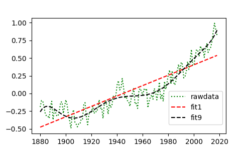
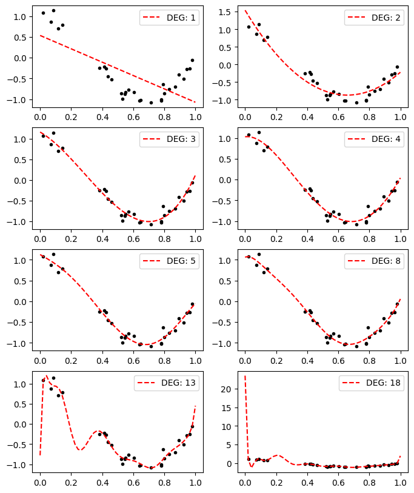
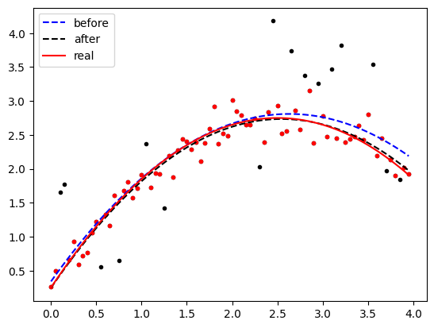
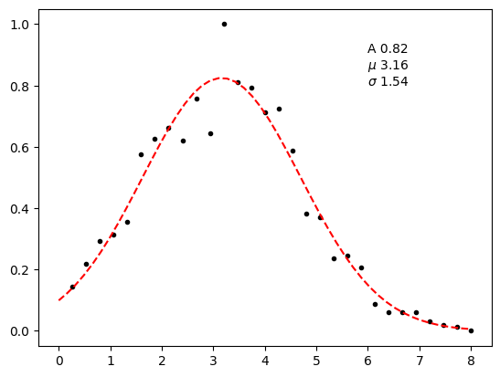
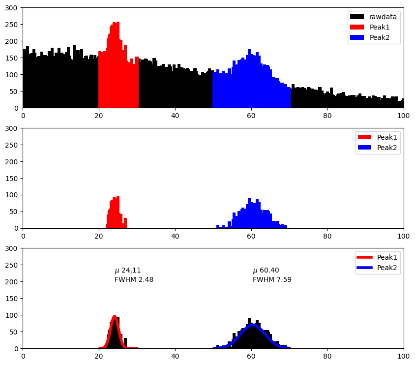

데이터 분석하기¶
데이터 피팅¶
온라인을 통해 나사의 연평균기온 데이터를 내려받고 해당 값에 다항식 피팅을 사용하여 근사합니다.
얻은 다항식 계수를 통해 지구 연평균 기온의 추세를 추정하거나 이후 값을 예측하는데 활용할 수 있습니다.
예제는 1차 다항식과 9차 다항식을 사용했습니다. 주제와 상황에 따라 적당한 다항식 근사를 사용하는 방법도 고민해봅시다.
1import matplotlib.pyplot as plt
2import numpy as np
3
4
5def get_data():
6 """
7 NASA로부터 1880년부터 2019년까지 월별 평균 기온 정보를 받아옵니다.
8 이 함수는 웹 문서를 읽어오는 패키지인 requests를 사용하며
9 csv는 쉼표와 줄바꿈문자를 이용해서 데이터를 구분하는 형식입니다.
10 """
11 import requests
12 url = 'http://data.giss.nasa.gov/gistemp/tabledata_v3/GLB.Ts+dSST.csv'
13 data = str(requests.get(url).content)
14 data = data.split('\\n')
15 # \n은 줄바꿈문자. 온라인에서 정보를 받아와서 각 줄별로 리스트를 생성한다
16 data = [row.split(',') for row in data]
17 # 각 줄마다 쉼표로 분리해서 2차원 리스트를 만든다
18 return (data[2:])[:-2] # 데이터가 아닌 부분은 슬라이싱
19
20
21if __name__ == "__main__":
22
23 """
24 연평균기온 데이터
25 """
26 data = get_data()
27 years = [int(row[0]) for row in data]
28 tempr = [float(row[13]) for row in data]
29
30
31 """
32 다항식 fitting - 1차
33 """
34 fitsp = np.linspace(years[0], years[-1], 100)
35 fit1 = np.poly1d(np.polyfit(years, tempr, 1))
36
37 """
38 다항식 fitting - 9차
39 """
40 fit9 = np.poly1d(np.polyfit(years, tempr, 9))
41
42 """
43 PLOT
44 """
45 plt.figure(figsize=[5, 3])
46 raw, = plt.plot(years, tempr, ':g')
47 p1, = plt.plot(fitsp, fit1(fitsp), "--r")
48 p9, = plt.plot(fitsp, fit9(fitsp), "--k")
49 plt.legend([raw, p1, p9], ['rawdata', 'fit1', 'fit9'], bbox_to_anchor=(1, 0.4))
50
51 # 만들어진 그래프 보기
52 plt.show()
53
54 # 만든 그래프 저장
55 # plt.savefig("01_data_fitting.png")
- W102_Analysis_Data.EX1_data_fitting.get_data()¶
NASA로부터 1880년부터 2019년까지 월별 평균 기온 정보를 받아옵니다. 이 함수는 웹 문서를 읽어오는 패키지인 requests를 사용하며 csv는 쉼표와 줄바꿈문자를 이용해서 데이터를 구분하는 형식입니다.
오버피팅¶
높은 차수의 다항식을 고려할 수록 당장 주어진 데이터와 잘 들어맞는 것 처럼 보이지만 얻은 계수를 토대로 값을 예측할 때는 오히려 더 좋지 않은 추론을 하게 될 수도 있습니다.
예제는 낮은 차수로부터 점점 높은 차수로 피팅한 결과를 그림파일로 저장합니다.
1import numpy as np
2import matplotlib.pyplot as plt
3
4x = [ 0.0202184, 0.07103606, 0.0871293, 0.11827443, 0.14335329, 0.38344152, 0.41466194, 0.4236548, 0.43758721, 0.46147936, 0.52184832, 0.52889492, 0.54488318, 0.5488135, 0.56804456, 0.60276338, 0.63992102, 0.64589411, 0.71518937, 0.77815675, 0.78052918, 0.79172504, 0.79915856, 0.83261985, 0.87001215, 0.891773, 0.92559664, 0.94466892, 0.96366276, 0.97861834]
5y = [ 1.0819082, 0.87027612, 1.14386208, 0.70322051, 0.78494746, -0.25265944, -0.22066063, -0.26595867, -0.4562644, -0.53001927, -0.86481449, -0.99462675, -0.87458603, -0.83407054, -0.77090649, -0.83476183, -1.03080067, -1.02544303, -1.0788268, -1.00713288, -1.03009698, -0.63623922, -0.86230652, -0.75328767, -0.70023795, -0.41043495, -0.50486767, -0.27907117, -0.25994628, -0.06189804]
6
7degs = [1, 2, 3, 4, 5, 8, 13, 18]
8
9
10if __name__ == "__main__":
11 plt.figure(figsize=(8, 10))
12 new_x = np.linspace(0, 1)
13
14 for ix, deg in enumerate(degs):
15 ax = plt.subplot(4, 2, ix+1)
16 fit = np.poly1d(np.polyfit(x, y, deg))
17 ax.plot(x, y, ".k")
18 ax.plot(new_x, fit(new_x), "--r", label="DEG: {}".format(deg))
19 ax.legend()
20
21 plt.savefig("EX2_overfit.png", bbox_inches='tight')
이상치¶
 1import numpy as np
2import matplotlib.pyplot as plt
3
4v = 2
5a = -0.4
6
7def gen_data(x):
8 y = v*x+a*x*x+np.random.rand(len(x))*0.5
9 for _ in range(int(len(y)/3)):
10 y[np.random.randint(0, len(y))] += (np.random.rand()-0.3)*3
11 return y
12
13if __name__ == "__main__":
14 x = np.arange(0, 4, 0.05)
15 y = gen_data(x)
16 fit = np.poly1d(np.polyfit(x, y, 2))
17 std = np.sqrt(np.mean((y-fit(x))**2))
18
19 new_x = []
20 new_y = []
21 for _x, _y in zip(x, y):
22 if np.abs(_y-fit(_x)) < std:
23 new_x.append(_x)
24 new_y.append(_y)
25 new_fit = np.poly1d(np.polyfit(new_x, new_y, 2))
26
27 plt.plot(x, y, '.k')
28 plt.plot(new_x, new_y, '.r')
29 plt.plot(x, fit(x), '--b', label="before")
30 plt.plot(x, new_fit(x), '--k', label="after")
31 plt.plot(x, v*x+a*x*x+0.25, 'r', label='real')
32 plt.legend()
33 plt.savefig("EX3_outlier.png", bbox_inches='tight')
가우스 모델¶
 1import numpy as np
2import matplotlib.pyplot as plt
3from scipy.optimize import curve_fit
4
5x = [0.267, 0.533, 0.800, 1.067, 1.333,
6 1.600, 1.867, 2.133, 2.400, 2.667,
7 2.933, 3.200, 3.467, 3.733, 4.000,
8 4.267, 4.533, 4.800, 5.067, 5.333,
9 5.600, 5.867, 6.133, 6.400, 6.667,
10 6.933, 7.200, 7.467, 7.733, 8.000]
11
12y = [0.143, 0.220, 0.292, 0.315, 0.357,
13 0.577, 0.625, 0.661, 0.619, 0.756,
14 0.643, 1.000, 0.810, 0.792, 0.714,
15 0.726, 0.589, 0.381, 0.369, 0.238,
16 0.244, 0.208, 0.089, 0.060, 0.060,
17 0.060, 0.030, 0.018, 0.012, 0.000]
18
19x = np.array(x)
20y = np.array(y)
21
22def gaussian(x, A, mu, sigma):
23 return A*np.exp(-(x-mu)**2/(2*sigma**2))
24
25
26if __name__ == "__main__":
27 _param, _ = curve_fit(gaussian, x, y)
28 new_x = np.linspace(0, 8)
29 new_y = gaussian(new_x, *_param)
30
31 plt.plot(x, y, '.k')
32 plt.plot(new_x, new_y, '--r')
33 txt = "A {:.2f}\n$\mu$ {:.2f}\n$\sigma$ {:.2f}".format(*_param)
34 plt.text(6, 0.8, txt)
35 plt.savefig("EX4_gaussian.png", bbox_inches='tight')
피크 분석¶
 1import numpy as np
2from numpy.random import randn
3import matplotlib.pyplot as plt
4from scipy.optimize import curve_fit
5
6def append(*args):
7 # 데이터를 합치는 함수
8 data = np.array([])
9 for arg in args:
10 data = np.append(data, arg)
11 return data
12
13"""
14Gaussian Fit: 중심점과 반치폭을 찾는다
15"""
16def gaussian(x, A, mu, sigma):
17 return A*np.exp(-(x-mu)**2/(2*sigma**2))
18
19
20
21# 데이터 생성
22n = 80000; chn = 400
23back = randn(n)*50
24peak1 = randn(int(n/50))*1.5+24
25peak2 = randn(int(n/30))*3.5+60
26
27if __name__ == "__main__":
28 data = append(back, peak1, peak2)
29 # 히스토그램 생성
30 hist, ch = np.histogram(data, bins=chn, range=(0, 100))
31 # bins: 채널 수, range: 범위
32 ch = ch[1:] # 채널 보정
33
34 """
35 예상되는 구간 설정
36 """
37 p1_ch, p1_hist = ch[20*4:30*4], hist[20*4:30*4]
38 p2_ch, p2_hist = ch[50*4:70*4], hist[50*4:70*4]
39
40 plt.figure(figsize=(10, 9))
41 ax = plt.subplot(3, 1, 1)
42 ax.set_xlim(0, 100)
43 ax.set_ylim(0, 300)
44 ax.bar(ch, hist, color='k', label="rawdata")
45 ax.bar(p1_ch, p1_hist, color='r', label="Peak1")
46 ax.bar(p2_ch, p2_hist, color='b', label="Peak2")
47 ax.legend()
48
49 """
50 Background 제거: Background를 1차함수로 가정한다.
51 """
52 p1_bk_fit = np.poly1d(np.polyfit([p1_ch[0], p1_ch[-1]], [p1_hist[0], p1_hist[-1]], 1))
53 p1_hist = p1_hist-p1_bk_fit(p1_ch)
54 p2_bk_fit = np.poly1d(np.polyfit([p2_ch[0], p2_ch[-1]], [p2_hist[0], p2_hist[-1]], 1))
55 p2_hist = p2_hist-p2_bk_fit(p2_ch)
56
57 ax = plt.subplot(3, 1, 2)
58 ax.set_xlim(0, 100)
59 ax.set_ylim(0, 300)
60 ax.bar(p1_ch, p1_hist, color='r', label="Peak1")
61 ax.bar(p2_ch, p2_hist, color='b', label="Peak2")
62 ax.legend()
63
64
65 _param1, _ = curve_fit(gaussian, p1_ch, p1_hist, p0=[150, 25, 1])
66 _param2, _ = curve_fit(gaussian, p2_ch, p2_hist, p0=[100, 60, 2])
67
68 ax = plt.subplot(3, 1, 3)
69 ax.set_xlim(0, 100)
70 ax.set_ylim(0, 300)
71 ax.bar(p1_ch, p1_hist, color='k')
72 ax.bar(p2_ch, p2_hist, color='k')
73 ax.plot(p1_ch, gaussian(p1_ch, *_param1), "r", label="Peak1", lw=4)
74 ax.plot(p2_ch, gaussian(p2_ch, *_param2), "b", label="Peak2", lw=4)
75 p1_tx = "$\mu$ {:.2f}\nFWHM {:.2f}".format(_param1[1], _param1[2]*2.3548)
76 p2_tx = "$\mu$ {:.2f}\nFWHM {:.2f}".format(_param2[1], _param2[2]*2.3548)
77 ax.text(_param1[1], 200, p1_tx)
78 ax.text(_param2[1], 200, p2_tx)
79 ax.legend()
80
81 plt.savefig("EX5_peak.png", bbox_inches='tight')